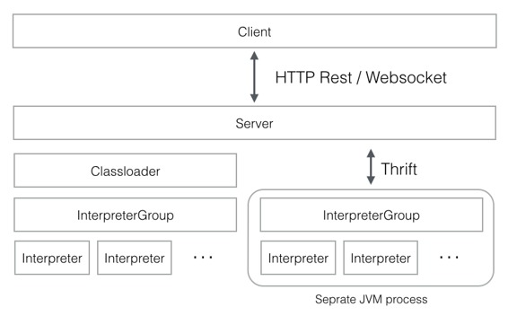

Writing a New Interpreter ( 写一个新的解释器 )
原文链接 : http://zeppelin.apache.org/docs/0.7.2/development/writingzeppelininterpreter.html
译文链接 : http://www.apache.wiki/pages/viewpage.action?pageId=10030728
什么是 Apache Zeppelin Interpreter
Apache Zeppelin Interpreter 是一种语言后端。例如，在 Zeppelin 中使用 scala 代码，您需要一个 scala 解释器。每个解释器都属于一个解释器组。相同的解释器中的解释器可以互相引用。例如，SparkSqlInterpreter 可以引用 SparkInterpreter ，以便在它们在同一个组中时从其获取SparkContext 。

InterpreterSetting 是给定的 InterpreterGroup 和一个启动/停止解释器的单元的配置。同一个 InterpreterSetting 中的所有解释器都在单独的 JVM 进程中启动。解释器通过 Thrift 与 Zeppelin engine 通信。
在创建新的解释器时，您可以在 “解释器设置” 菜单中看到“每个音符”模式的“单独的解释器（范围/隔离）”，每个音符将创建新的解释器实例。但是它们在同一个 InterpreterSettings 中仍然运行在同一个 JVM 上。
制作你自己的 Interpreter
创建一个新的 interpreter 是非常简单的。只需扩展 org.apache.zeppelin.interpreter 抽象类并实现一些方法。您可以在构建系统中包含 org.apache.zeppelin：zeppelin-interpreter：[VERSION] artifact。您应该将您的 jar 放在您的解释器目录下，并具有特定的目录名称。 Zeppelin 服务器递归地读取解释器目录，并初始化包括您自己的解释器在内的 interpreter 。
有三个位置可以存储您的 interpreter group，name 和 其他信息。 Zeppelin 服务器尝试找到以下位置。接下来， Zeppelin 尝试在您的解释器 jar 中找到 interpreter-setting.json。
{ZEPPELIN_INTERPRETER_DIR}/{YOUR_OWN_INTERPRETER_DIR}/interpreter-setting.json
以下是您自己的 interpreter 上的 interpreter-setting.json 的例子。
[
{
"group": "your-group",
"name": "your-name",
"className": "your.own.interpreter.class",
"properties": {
"properties1": {
"envName": null,
"propertyName": "property.1.name",
"defaultValue": "propertyDefaultValue",
"description": "Property description"
},
"properties2": {
"envName": PROPERTIES_2,
"propertyName": null,
"defaultValue": "property2DefaultValue",
"description": "Property 2 description"
}, ...
},
"editor": {
"language": "your-syntax-highlight-language",
"editOnDblClick": false
}
},
{
...
}
]
最后， Zeppelin 使用以下静态初始化：
static {
Interpreter.register("MyInterpreterName", MyClassName.class.getName());
}
静态初始化已被弃用，直到 0.6.0 才会被支持。
在解释器配置过程中，名称将会稍后出现在解释器名称选项框中。解释器的名字是您以后写的，以确定应使用此解释器解释的段落。
%MyInterpreterName
some interpreter specific code...
Editor setting for Interpreter ( 解释器的编辑器设置 )
您可以将编辑器对象添加到 interpreter-setting.json 文件中以指定段落编辑器设置。
Language ( 语言 )
如果解释器使用特定的编程语言（如 Scala ， Python ， SQL ），则通常建议将语法突出显示添加到注释段落编辑器中。
要查看支持的语言列表，请参阅 zeppelin-web / bower_components / ace-builds / src-noconflict 或 github.com/ajaxorg/ace-builds 下的 model - *.js 文件。
如果要添加一组新的语法高亮：
- 将 model-*.js 文件添加到 zeppelin-web / bower.json （当内置时， zeppelin-web / src / index.html 将自动更改）。
将语言字段添加到编辑对象。请注意，如果您不指定语言字段，则您的解释器将使用纯文本模式进行语法突出显示。假设您要将语言设置为 java ，然后添加：
"editor": {
"language": "java"
}
Edit on double click ( 双击编辑 )
如果您的解释器使用标记语言（如 markdown 或 HTML ），请将 editOnDblClick 设置为 true ，以便文本编辑器在对话框上双击并在段落运行中关闭。否则将其设置为 false 。
"editor": {
"editOnDblClick": false
}
Install your interpreter binary ( 安装你的解释器二进制文件 )
一旦您构建了您的解释器，您可以将其放在解释器目录下，并具有所有的依赖关系。
[ZEPPELIN_HOME]/interpreter/[INTERPRETER_NAME]/
Configure your interpreter ( 配置您的解释器 )
要配置您的解释器，您需要遵循以下步骤：
-
将解释器类名添加到 conf / zeppelin-site.xml 中的 zeppelin.interpreters 属性。属性值以逗号分隔 [INTERPRETER_CLASS_NAME] 。例如，
<property> <name>zeppelin.interpreters</name> <value>org.apache.zeppelin.spark.SparkInterpreter,org.apache.zeppelin.spark.PySparkInterpreter,org.apache.zeppelin.spark.SparkSqlInterpreter,org.apache.zeppelin.spark.DepInterpreter,org.apache.zeppelin.markdown.Markdown,org.apache.zeppelin.shell.ShellInterpreter,org.apache.zeppelin.hive.HiveInterpreter,com.me.MyNewInterpreter</value> </property> -
将您的解释器添加到当没有 zeppelin-site.xml 时使用的默认配置。
- 通过运行 ./bin/zeppelin-daemon.sh 启动 Zeppelin 。
在解释器页面中，单击+创建按钮并配置您的解释器属性。现在你已经完成并准备好使用你的解释器。
注意
使用 zeppelin 发布的解释器有一个默认配置，当没有 conf / zeppelin-site.xml 时使用。
Use your interpreter ( 使用你的解释器 )
0.5.0
在 [NOTE] 的指令中，%[INTERPRETER_NAME] 指令会调用您的解释器。请注意，zeppelin.interpreters 中的第一个解释器配置将是默认配置。
例如：
%myintp
val a = "My interpreter"
println(a)
0.6.0 and later
在一个注释的内部，%INTERPRETER_GROUP].[INTERPRETER_NAME] 指令将会调用您的解释器。
您可以省略 [INTERPRETER_GROUP] 或 [INTERPRETER_NAME] 。如果您忽略 [INTERPRETER_NAME] ，则会在 [INTERPRETER_GROUP] 中选择第一个可用的解释器。同样，如果您跳过 [INTERPRETER_GROUP] ，则会从默认解释器组中选择 [INTERPRETER_NAME] 。
例如，如果 mygrp group 中有两个解释器 myintp1 和 myintp2 ，可以像 myintp1 一样调用：
%mygrp.myintp1
codes for myintp1
你可以像 myintp2 一样调用
%mygrp.myintp2
codes for myintp2
如果省略您的解释器名称，它将在 group ( myintp1 ) 中选择第一个可用的解释器。
%mygrp
codes for myintp1
当您的 interpreter group 被选为 默认组 时，您只能省略您的 interpreter group 。
%myintp2
codes for myintp2
Examples ( 示例 )
查看一些与 Zeppelin 发布的 interpreters 。
Contributing a new Interpreter to Zeppelin releases ( 为 Zeppelin 发行新的解释器 )
我们欢迎对新的解释器的贡献。请按照以下几个步骤进行：
- 首先，在 这里 查看一般性贡献指南。
- 按照上述 “解释器自己的解释器部分” 和 “编辑器设置” 中的步骤进行。
- 添加您的解释器，如上面的 配置您的解释器部分 ;还将其添加到示例模板 zeppelin-site.xml.template 中。
- 添加测试！他们由 Travis 经营所有变化，重要的是他们是独立的。
- 将您的解释器作为 pom.xml 中的模块。
- 添加有关如何在 docs / interpreter / 下使用解释器的文档。以 Markdown 风格为例。确保您列出配置设置，并提供在 Markdown 的代码框中使用解释器的工作示例。根据需要链接到图片（图片应转到 docs / assets / themes / zeppelin / img / docs-img / ）。并在导航菜单（docs / _includes / themes / zeppelin / _navigation.html）中添加您的文档的链接。
- 最重要的是，确保所有依赖关系的传递关闭的许可证在 许可证文件 中列出。
- 提交您的更改，并在 GitHub 上的项目 Mirror 上打开一个 Pull 请求;检查以确保 Travis CI 构建正在通过。